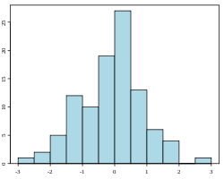
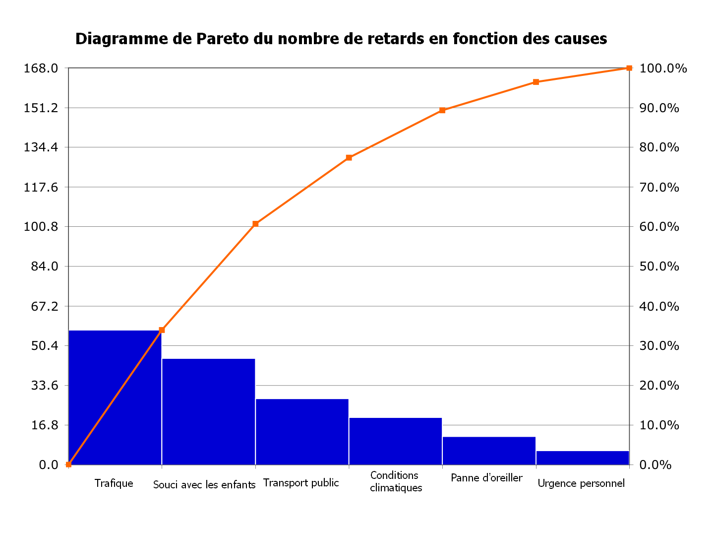
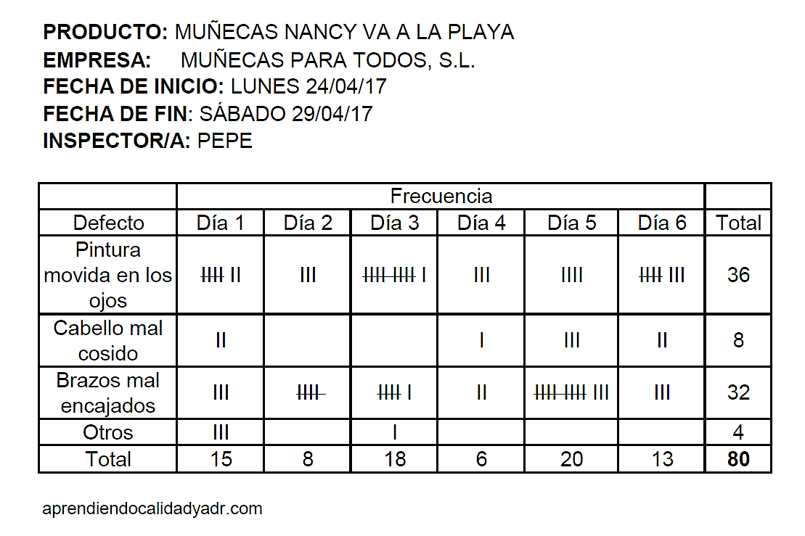
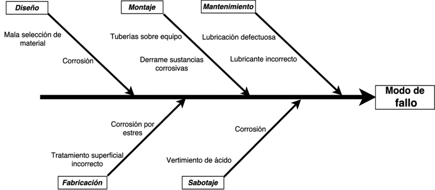
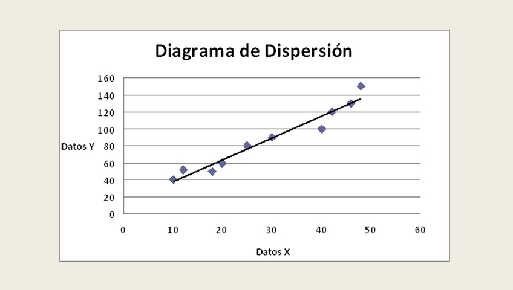

Tarea 1
Técnicas comunes para el mejoramiento continuo
Realice una investigación de las normas de calidad implementadas en una empresa de su elección y emita su análisis comparativo. Tome en cuenta la bibliografía propuesta por el docente y elabore un informe académico. Libro Cantú, H (2011). Desarrollo de una cultura de calidad. Técnicas para el mejoramiento continuo. (p. 178-188).
Histogramas
Es la representación gráfica de la distribución de un conjunto de datos. Los histogramas muestran la frecuencia o número de observaciones cuyo valor se ubica en un rango predeterminado. La forma que adopte un histograma proporciona pistas concernientes a la distribución de probabilidad del proceso de donde se tomó la muestra, por lo cual se convierte en una herramienta muy útil de comunicación visual.

Diagrama de Pareto
Gráfica de dos dimensiones que se construye al listar las causas de un problema en el eje horizontal, a partir de la izquierda para colocar aquellas que tienen mayor efecto sobre el problema, de manera que disminuyan en orden de magnitud. El eje vertical se dibuja en ambos lados del diagrama: el lado izquierdo representa la magnitud del efecto propiciado por las causas, mientras que el lado derecho refleja el porcentaje acumulado de efecto de las causas, a partir de la de mayor magnitud.

Hoja de verificación
Formato que facilita levantar datos de manera ordenada y
de acuerdo con el estándar requerido en
el análisis que se realice. También se conocen como hojas de comprobación o de
chequeo.
Algunos de los usos de las hojas de chequeo en procesos productivos son
los siguientes: verificar la distribución del proceso de producción y elaborar el
histograma correspondiente,
registrar la ocurrencia de defectos, verificar las causas de los defectos,
representar la localización de los
defectos sobre determinada pieza y asegurar que se han realizado las actividades
programadas de cierta operación.
El esquema general de las hojas de verificación es el siguiente: en la parte
superior se anotan los
datos generales del proceso y variables que se miden, y en la parte inferior se
transcriben los resultados
de dichas mediciones.
La ventaja principal de usar este tipo de herramientas es que facilitan tanto la
localización como
el análisis de información, además de que permiten visualizar la distribución de un
proceso de producción desde un punto de vista amplio y claro, con lo cual se pueden
ubicar y verificar los defectos en él.
Las figuras 5.43 y 5.44 muestran dos aplicaciones diferentes de las hojas de
verificación

Diagramas causa-efecto
Representación gráfica del conjunto de causas que
podrían provocar el problema estudiado o
influir en determinada característica de calidad. También se les conoce como
Diagramas Ishikawa o espina de pescado.
Estos diagramas reciben también el nombre de su creador, Ishikawa, y en algunos
casos también el de espina de pescado por la forma que adquieren. Son una manera
gráfica de representar el conjunto de causas que podrían provocar el problema
estudiado o influir en determinada característica de calidad. Se utilizan para
ordenar las
ideas que resultan de un proceso de lluvia de ideas al responder a alguna pregunta
de
partida planteada por el grupo que realiza el análisis.

Diagramas de dispersión
Se trata de una técnica estadística utilizada para estudiar la relación entre dos
variables; por ejemplo, entre una característica de calidad y un factor que le
afecta, entre
dos características de calidad relacionadas, o entre dos factores relacionados con
una
sola característica de calidad. La ventaja de usar este tipo de diagramas es que al
hacerlo se comprende de manera más profunda el problema planteado. Esta herramienta
la emplean con frecuencia los economistas para analizar la relación entre dos
variables macroeconómicas; por ejemplo, entre la inflación y el consumo per cápita;
sin embargo, aquí sólo interesa su
utilidad para analizar y solucionar problemas de calidad.
La relación entre dos variables se representa mediante una gráfica de dos
dimensiones en la que
cada relación está dada por un par de puntos (uno para cada variable).
